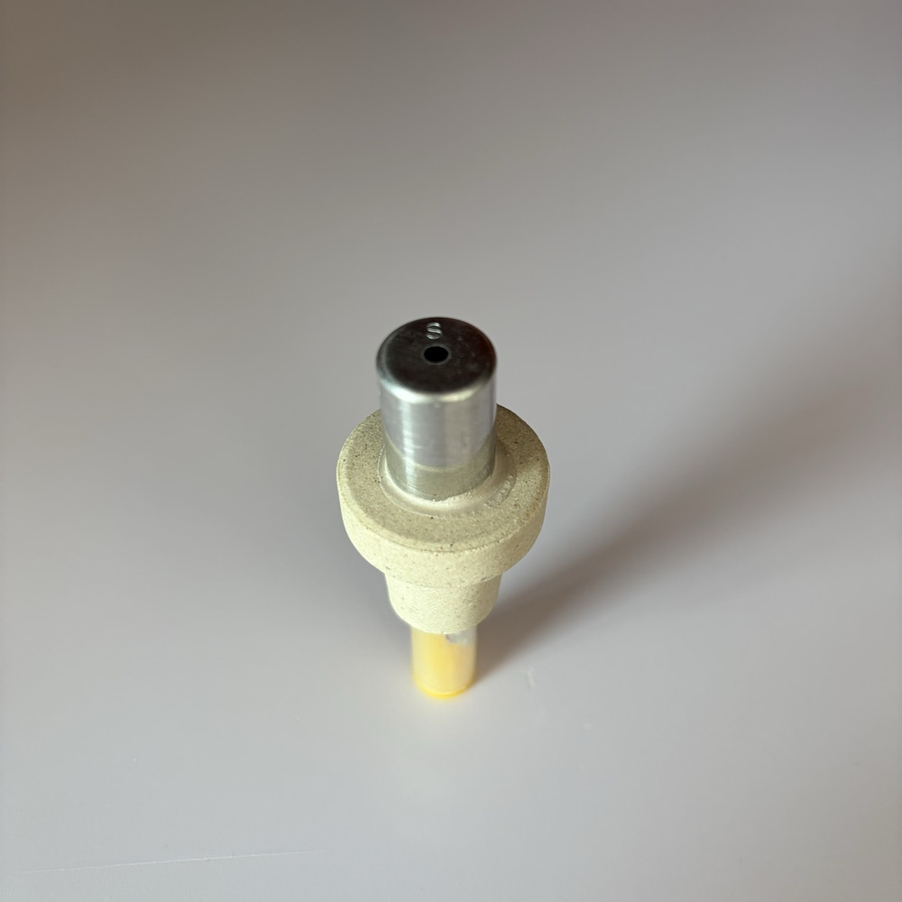
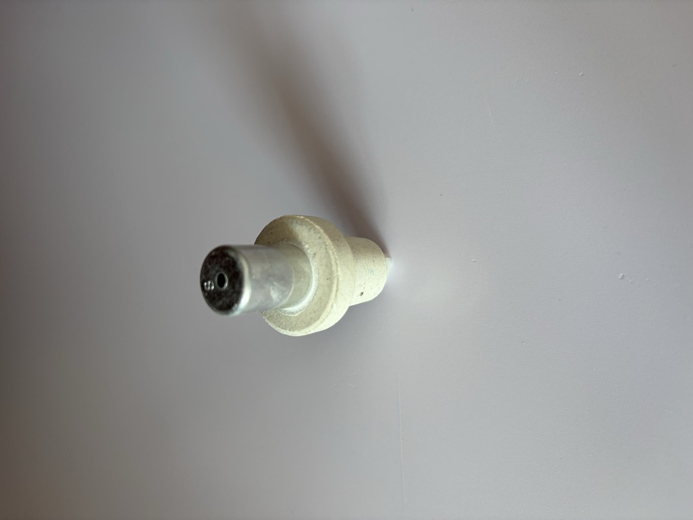
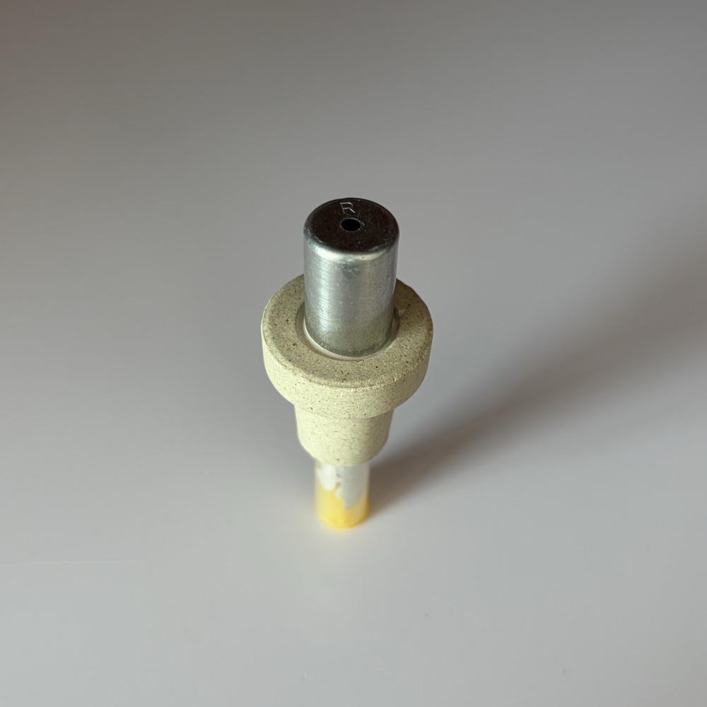
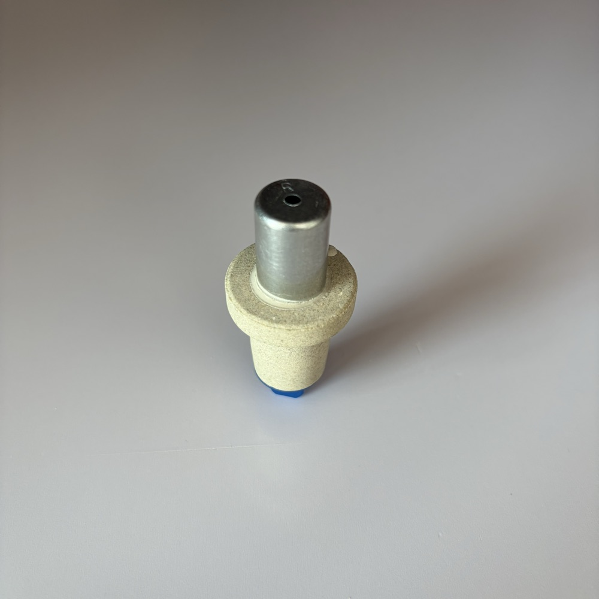
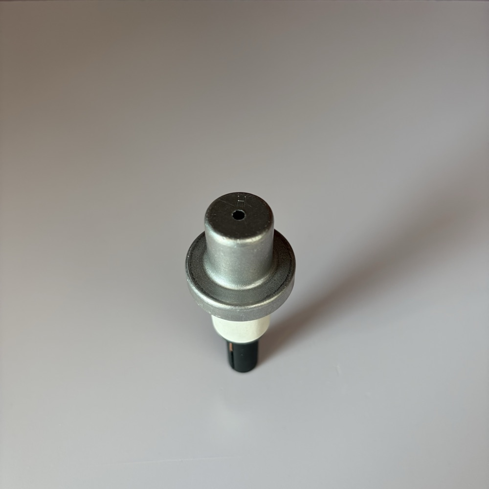
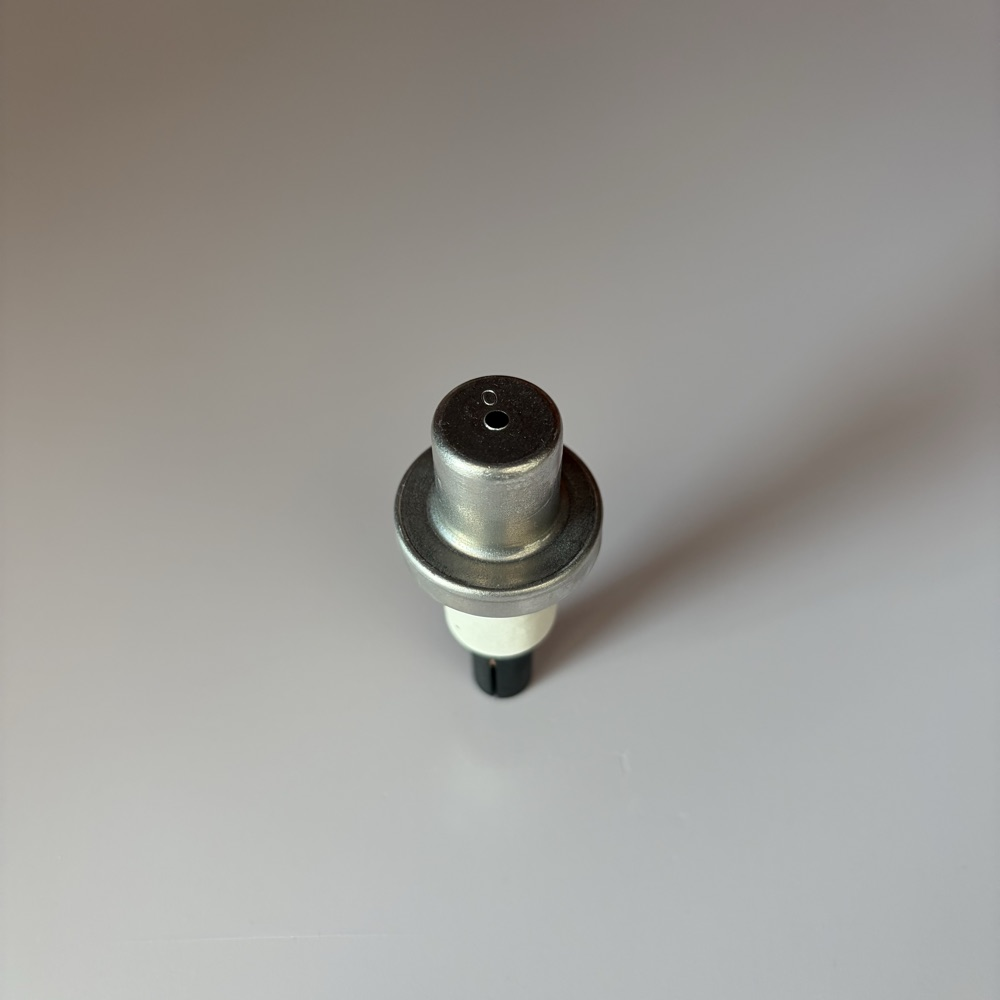
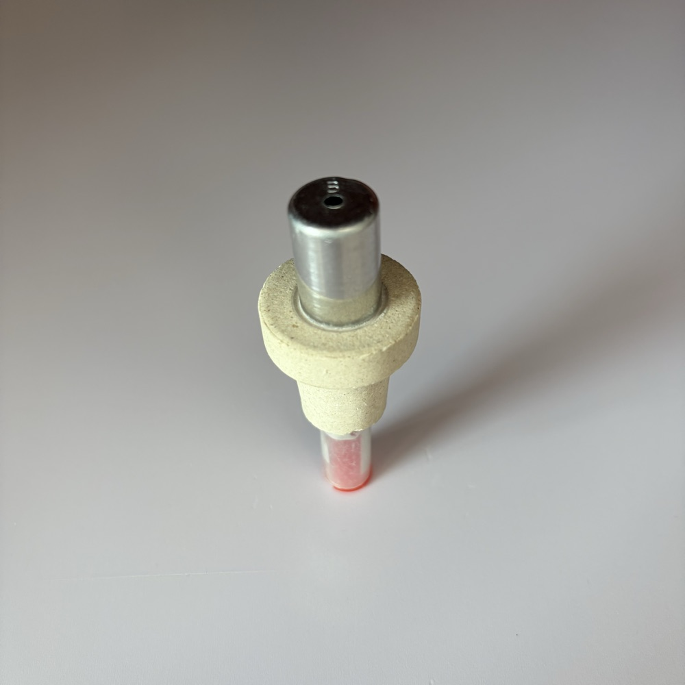
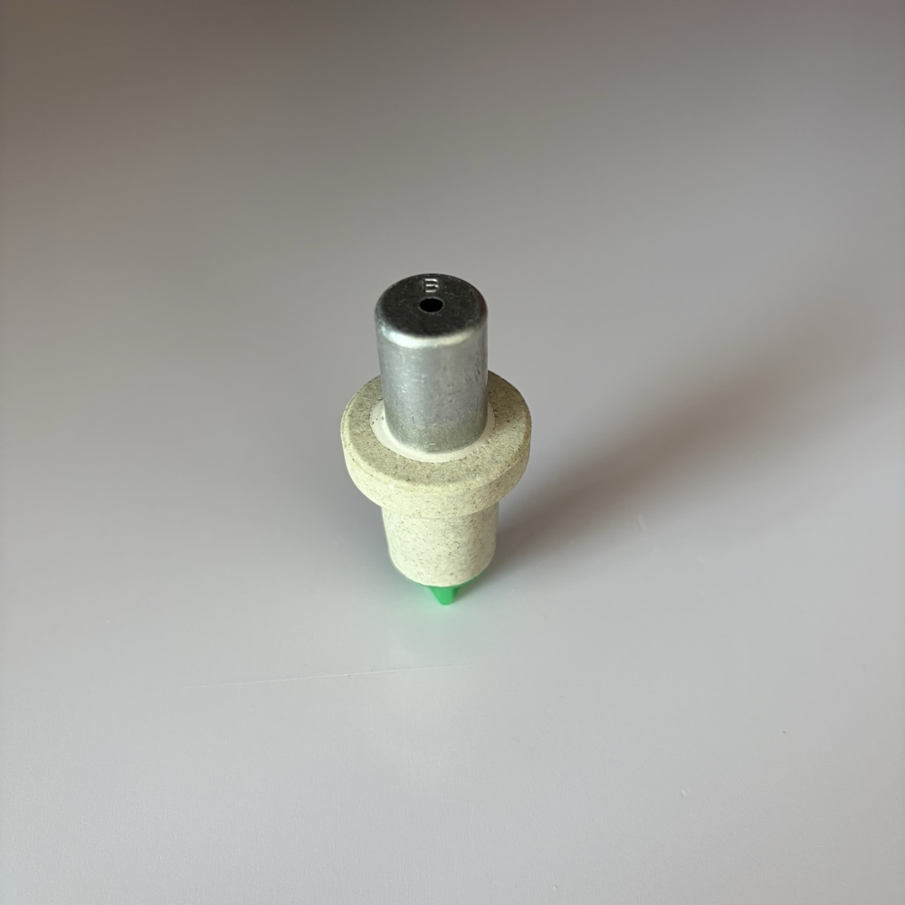
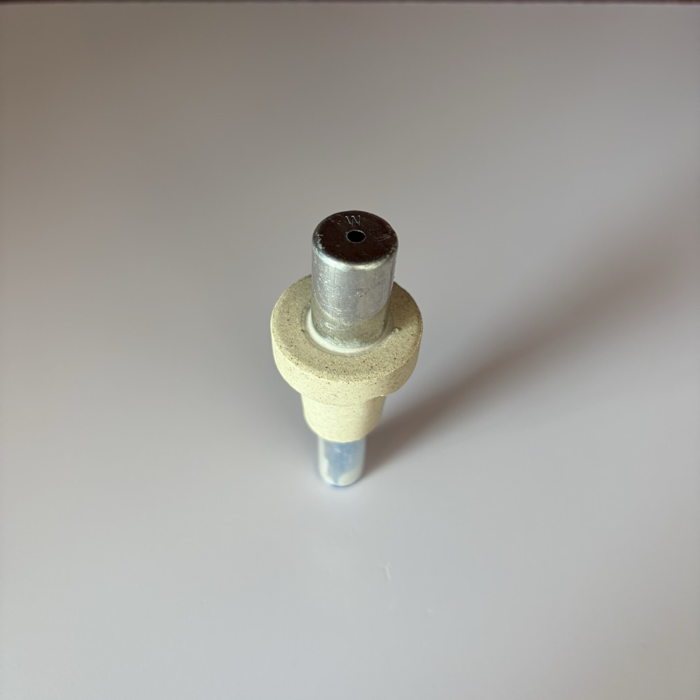
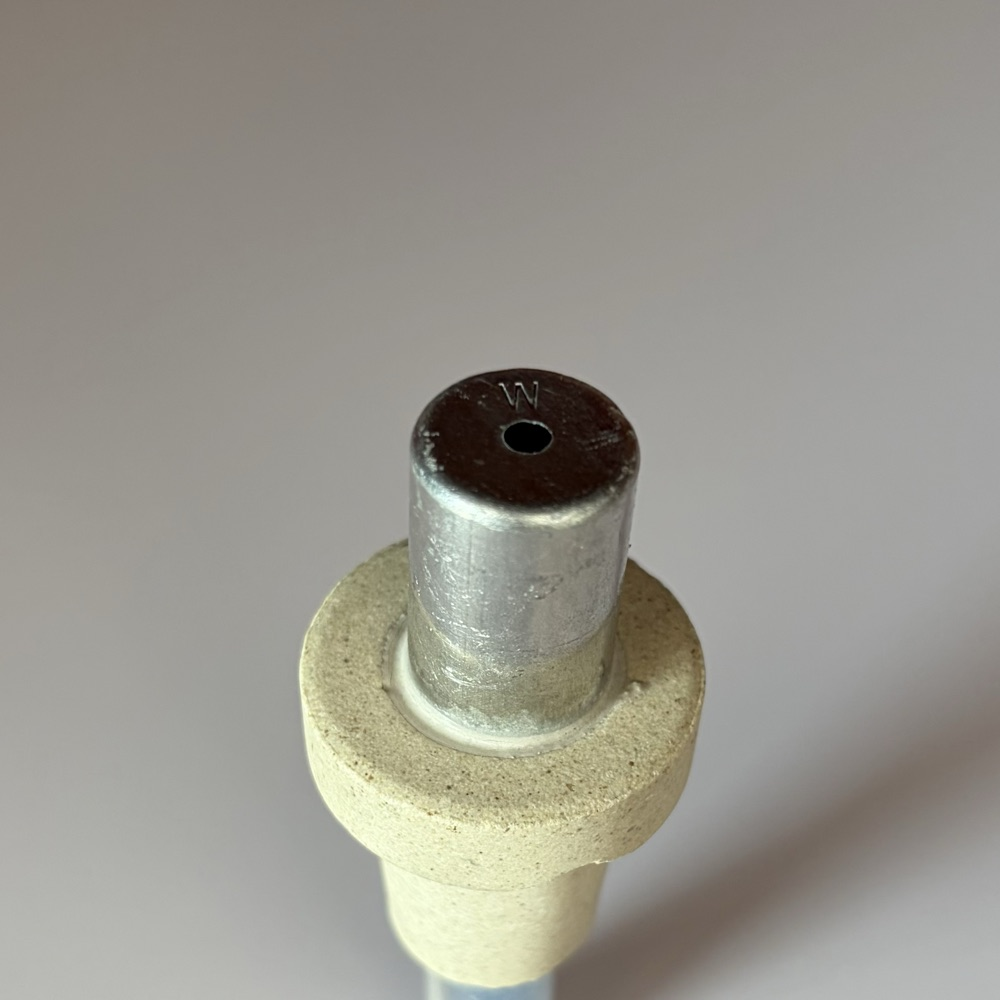

快速热电偶（S / R / B / W 分度号）及配套的钢水取样器、定氧探头、测温表、测温枪头、测温枪
Fast-response thermocouples (Types S / R / B / W) plus molten-steel samplers, oxygen probes, indicators, lance heads and lances
铂铑10-铂（S 分度号）偶丝，最佳适用温度 1400~1600℃、上限 1650℃，测量时间 4~6 秒，性价比高，广泛用于转炉、电炉钢水快速测温。
Pt-10%Rh/Pt (Type S) element, optimal 1400–1600°C, max 1650°C, 4–6s reading — cost-effective, widely used for BOF and EAF molten steel.

产品图片位
产品图片位铂铑13-铂（R 分度号）偶丝，最佳适用温度 1400~1600℃、上限 1650℃，热电动势与测量精度优于 S 型；含 KR-602、KR-604 及 HR、OR 特种型号。
Pt-13%Rh/Pt (Type R) element, optimal 1400–1600°C, max 1650°C, higher EMF and accuracy than Type S; includes KR-602, KR-604 and the special HR / OR models.

产品图片位
产品图片位
产品图片位
产品图片位铂铑30-铂铑6（B 分度号）偶丝，最佳适用温度 1500~1700℃、上限 1750℃，常温下热电动势极小、可不使用补偿导线，专为钢水、铁水等超高温熔体设计。
Pt-30%Rh/Pt-6%Rh (Type B) element, optimal 1500–1700°C, max 1750°C; negligible EMF near ambient (no compensating cable), built for molten steel and iron.

产品图片位
产品图片位钨铼3-钨铼25（W 分度号）偶丝，最佳适用温度 1500~1700℃、上限 1800℃，允差 ±7℃，适用于高炉铁水及有色金属熔炼等极端高温工况。
WRe3–WRe25 (Type W) element, optimal 1500–1700°C, max 1800°C, tolerance ±7°C, for blast-furnace hot metal and non-ferrous smelting.

产品图片位
产品图片位用于快速取出成型钢样供光谱分析，结构简单、取成率高（约 98%），钢样饱满质密、光滑无气孔，广泛应用于电炉、转炉、连铸及二次精炼。
Takes a solidified steel sample for spectrometer analysis — simple structure, ~98% success rate, dense pore-free samples; used across EAF, BOF, continuous casting and secondary refining.
圆饼形钢样，适配主流直读光谱仪Disc-shaped sample suited to common direct-reading OES spectrometers
详细规格待补充。Detailed specs to be provided.
一次取样得到薄、厚两种试样，兼顾光谱与其他分析One dip yields thin and thick samples for OES and other analyses
详细规格待补充。Detailed specs to be provided.
基于氧化锆固体电解质测量钢水中溶解氧活度，指导脱氧、合金化与钙处理；可与测温合为一体。
Uses a zirconia solid-electrolyte cell to measure dissolved-oxygen activity in molten steel, guiding deoxidation, alloying and calcium treatment; available combined with temperature.
一次浸入同时得到钢水温度与氧活度One immersion returns both temperature and oxygen activity
详细规格待补充。Detailed specs to be provided.
仅测氧活度，配合定氧仪使用Oxygen activity only, used with an oxygen meter
详细规格待补充。Detailed specs to be provided.
快速热电偶的二次显示仪表，数字显示、峰值保持，可选测温、测温定氧、多功能等型号。
The secondary readout for fast-response thermocouples — digital display with peak hold; models for temperature only, temperature-oxygen, or multifunction.
手持数显，现场即测即读Handheld digital readout for on-floor use
详细规格待补充。Detailed specs to be provided.
安装于控制室盘面，可接入自动系统Control-room panel mount, integrates with automation
详细规格待补充。Detailed specs to be provided.
位于测温枪前端的连接偶头，内含补偿触点，用于插接消耗式热电偶、取样器或定氧探头，属易损件。
The contact head at the lance tip — houses the compensating contacts that the consumable thermocouple, sampler or oxygen probe plugs onto; a wear part.
快速插拔，兼容通用规格偶头Quick-change, fits common probe formats
详细规格待补充。Detailed specs to be provided.
加厚结构，适合高频次测量Thicker build for high-frequency measurement
详细规格待补充。Detailed specs to be provided.
操作人员手持的测温长杆，含手柄、补偿电缆与枪头，将消耗式偶头浸入熔体；长度可按炉型选配。
The hand-held lance — handle, compensating cable and lance head — used to immerse the consumable probe into the melt; length selected to suit the furnace.
长度 1.5~3 m，适合转炉、电炉、钢包测温1.5–3 m, for BOF, EAF and ladle measurement
详细规格待补充。Detailed specs to be provided.
长度 3~6 m，适合高炉出铁场、大容量炉体3–6 m, for the blast-furnace cast house and large vessels
详细规格待补充。Detailed specs to be provided.
告诉我们您的长度、材质、量程要求，72小时内提供图纸
Tell us your length, material, and range requirements — drawings within 72 hours
联系工程师Contact an Engineer